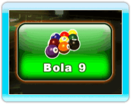
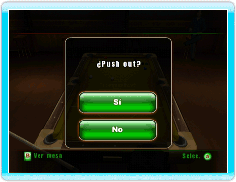

25 |
Bola 9 |
 |
 Se debe golpear primero la bola con la numeración más baja. El ganador es el primero que meta la bola 9 de manera legal. Orden de salida Para determinar quién rompe, cada jugador realiza un tiro desde detrás de la línea de cabecera hacia la banda superior, y la bola blanca debe volver a la banda inferior. El jugador cuya bola quede más cerca de la banda inferior rompe. Se permite que la bola golpee la banda al volver aunque no es requerido.Saque legal Para realizar un saque legal, debe golpearse primero la bola 1 y embocar una bola, o bien deben tocar la banda al menos cuatro bolas numeradas. Si el saque no es legal, se produce falta. Cuando ocurre una falta en el saque, el siguiente jugador toma posesión de la bola blanca. Si se emboca la bola blanca en un saque legal, se produce falta. Todas las bolas embocadas permanecen en tronera y el siguiente jugador tiene la posesión de la blanca.Faltas Si se comete falta, el jugador pierde su turno. Las bolas embocadas en el tiro de falta no vuelven a colocarse (excepto la 9). El siguiente jugador toma posesión de la bola blanca y puede colocarla donde quiera. Tras cometer tres faltas consecutivas, el jugador pierde automáticamente. Varias faltas en un solo tiro cuentan como una sola falta.Push out Este tiro puede jugarse después del saque. Aquí no hace falta que la bola blanca toque otra bola o la banda. Se aplican el resto de las reglas sobre faltas. El siguiente jugador puede devolver el tiro o jugar desde la posición en la que ha quedado la bola. Si no se emboca la bola objetivo después de haber sido tocada por la blanca, deben tocar banda o bien la blanca o bien cualquier otra numerada. Si no es así, se produce falta. Orden de tiro En todos los tiros, el jugador debe golpear siempre la bola que tenga el número más bajo. |
 |
 |